Motivation — Why This Problem
1. The underlying question: why do people facing identical options decide differently?
At eight in the morning, two people leave the same apartment building for the same office. One takes the thirty-minute subway; the other takes the fifty-minute bus because a seat is guaranteed. The fare, the distance and the weather are identical. A standard choice model absorbs this difference into an error term. But the difference is not noise. It is information that happens to be unobserved, and it has structure.
Differences in choice arise on at least three levels.
- Intrinsic human attributes. The value a person places on time, money, safety and comfort depends on biological condition (physical stamina, age, health), life stage (childcare, caregiving, retirement) and psychological disposition (risk aversion, loss aversion, reliance on habit). The same hour is more expensive for someone who recovers slowly.
- Situational dependence of behaviour. The same individual values time differently on a commute and on a weekend trip. People evaluate outcomes not in absolute utility but as gains and losses relative to a reference point, and recent work shows that the reference point itself is formed differently across individuals and alternatives[24].
- The structure of the socio-economic system. Income distribution, employment type, residential location and infrastructure access are stratified and unequal. For an hourly worker, being twenty minutes late is a direct wage loss; for a salaried worker with discretion over hours, it is not. Institutions make the time and money constraints of individuals differ from one another. Differences in preference are not only a matter of taste; they are a reflection of constraint structures.
A more fundamental obstacle compounds this. Preferences cannot be observed directly. What the data record is the outcome — what was chosen — and from that outcome the reason must be inferred in reverse. An individual's value of time is not a quantity read off an instrument but a latent quantity that must be recovered from patterns of choice. Every methodological debate in this field therefore converges on a single question: under what assumption should the distribution of unobserved preferences be recovered?
2. Why the methodology must be changed and tested
The case for changing methods is not a matter of taste. It follows from five steps.
- Policy requires distributions, not averages. The benefits and burdens of congestion charging, fare increases and new services are not spread evenly across a population. A single average value of time cannot answer the equity question of who loses and by how much. More pointedly, recent work has shown that the customary practice of computing willingness to pay (WTP) as a ratio of coefficients produces serious errors when the moments of the resulting distribution do not exist[22]. If the distribution is handled badly, the policy indicator itself becomes untrustworthy.
- Yet mixed logit (MXL) assumes that distribution. The moment normality is assumed, preferences are forced to be unimodal and symmetric. Empirical work reports that across several stated-preference datasets the WTP distribution is multimodal, and that groups with a non-negative WTP for undesirable attributes genuinely exist, so sign constraints should not be imposed mechanically[25]. This has prompted a stream of transformation-based flexible distributions accommodating non-normality, skewness and multimodality[20][21], and of nonparametric or distribution-free estimators that dispense with the assumption entirely[19][23]. The stream itself is evidence that the conventional distributional assumption is being empirically rejected.
- Latent class models pay for the assumption elsewhere. In exchange for not assuming a distributional shape, they fix the number of classes in advance and treat preferences as homogeneous within a class. In practice heterogeneity persists inside classes, and even the statistical inference of these models — the asymptotic variance — has only recently been put on firmer ground[27].
- Neural networks improved prediction but lost interpretation. The objection has been raised directly: data-driven choice models raise predictive accuracy without resolving misspecification and yield untrustworthy behavioural interpretations. Responses include lattice-network models that impose monotonicity structurally[15], embedding architectures that preserve coefficient interpretability[14], and neural estimators that guarantee consistency with random utility maximisation[17]. Most of these, however, still concentrate on making systematic heterogeneity flexible, absorbing within-group random heterogeneity into a residual layer or reducing it to a point estimate[16][18].
- The problem is therefore not to remove assumptions but to decide where to put them. No model recovers latent preferences without assumption. MXL places its assumption on the shape of the coefficient distribution; latent class models on the number of classes and within-class homogeneity; neural models on functional form and regularisation. The total quantity of assumption is conserved; only its position moves. The empirical question is then singular: at which position does the assumption yield the most stable recovery of policy indicators such as the value of time and elasticities? That question cannot be settled by theory alone. It requires experiments that combine synthetic data with known ground truth and real data. This is the case for changing the method and testing it.
3. The core idea
The idea reduces to one sentence. Do not predict an individual's preference as a single number; predict the entire shape in which preference is dispersed within that individual's condition. And learn that shape from observed choice outcomes alone.
- MNL — "The average height in this class is 165 cm." One number.
- MXL — "Height is normally distributed: mean 165, standard deviation 8." Even if there are in fact two peaks, one for each sex, they are flattened into a single broad bell.
- TasteNet — "Tell me sex and year and I will predict the height: for a second-year boy, 172 cm." Accuracy improves, but it is still one value, and the differences among second-year boys vanish.
- MDN-Logit — "For a second-year boy, height is dispersed with a large peak near 168 and a smaller one near 178." For each condition it outputs an entire distribution.
There is a decisive twist. We have never measured anyone's height. All we hold is a record of choices — whether the student reached for the object on the high shelf or fetched a ladder — together with the knowledge that taller students are more likely to reach. We must therefore recover the height distribution from choice records alone. This is why MDN-Logit cannot use the standard training objective of a mixture density network, which maximises the likelihood of an observed target, and must instead embed the distribution inside the choice model and estimate both jointly.
4. Contribution of the proposed research
From the argument above, the contributions follow.
- Decomposing the source of improvement. When a neural-embedded choice model outperforms conventional models, it has so far been impossible to say whether the gain came from capturing coefficient heterogeneity or from capturing non-linearity in the utility function. Placing the structure that estimates coefficient distributions (MDN-Logit) and the structure that flexibilises functional form (a residual network) separately within one model, and comparing them, allows the source of the gain to be decomposed empirically.
- Reporting policy indicators as distributions. Instead of a single mean value of time, report the distribution of the marginal utilities of time and cost, the share of each coefficient sign, the proportion and distribution of the population for whom the value of time is defined, and the characteristics of the group whose sign reverses. This is a practical response to the moment problem in WTP estimation[22] and to recent evidence that the tail of the distribution drives valuation[26], and it supplies the basis for equity analysis.
- Redefining sign constraints from a deletion rule into diagnostic information. Conventional practice blocks positive time and cost coefficients by constraint, or discards them after the fact. Given the empirical evidence for multimodal and asymmetric preferences[25], such coefficients may be the genuine preference of a particular group, or a signal of omitted variables or misspecification. Reporting them as a separate group turns them into a model-diagnostic tool.
- Establishing a benchmark for the location of assumptions. Using a model that does not impose strong assumptions on sign or functional form — MAPL — as the comparison baseline makes it possible to quantify how far the conclusions of a structural model depend on its assumptions. This moves beyond a contest between individual models toward a framework for assumption-sensitivity analysis.
- Securing interpretability and uncertainty quantification together. A model that reports whose preferences are distributed how, and how uncertain that estimate is — rather than a black box with high accuracy — is a minimum requirement for public-policy decision making. This aligns with the direction interpretable machine learning should take[15].
With this framing in place, the two representative studies — which locate their assumptions differently — are analysed in turn.
Research Objectives
The purpose of this seminar is to examine how observed (systematic) and unobserved (random) heterogeneity can be flexibly estimated in neural random-coefficient models while preserving the interpretable preference-coefficient structure of the random utility model. Three aims follow.
- Develop reliable inference for distributional quantities — preference polarisation, the coefficient distribution, quantiles of willingness to pay (WTP) — rather than for the mean coefficient alone.
- Secure, alongside flexible predictive power, the behavioural interpretation and uncertainty assessment that policy analysis requires.
- To that end, compare two recent studies that embed neural networks in discrete choice models (DCM): MDN-Logit (Mixture Density Network-embedded Logit)[1] and MAPL (Mixed Aggregate Preference Logit)[2].
Part I MDN-Logit: Conditional Mixture Distributions over Preference Coefficients
0. Core assumptions and idea
- People maximise random utility. Utility splits into an observable systematic part and an unobservable error term, and the error follows an extreme value distribution. The logit framework itself is retained.
- Utility is a linear, additive combination of preference coefficients and attributes. The structure \(V = \beta x\) is not changed. What is made flexible is not the functional form in \(x\) but the distribution of \(\beta\).
- Preference coefficients are random variables conditional on individual characteristics. People sharing the same socio-demographic vector \(z_n\) do not share a single \(\beta\); each draws a value from a distribution that \(z_n\) determines.
- That conditional distribution can be approximated by a finite mixture of normals. The number of components \(K\) is fixed, but the location, spread and weight of each component are determined by the data.
- Coefficients are conditionally independent, for tractability. The covariance matrix is set diagonal, so correlation across attributes is not modelled.
- Economic theory enters as a constraint. A sign constraint requiring the mean coefficients of time and cost to be negative is imposed on the mean of the distribution.
- MNL assigns all 200 a single time coefficient → a value of time of 1.2 CHF/min.
- TasteNet reads the condition "male, thirties, middle income" and returns a more refined figure, but still one value → 1.35 CHF/min.
- MDN-Logit returns, for the same condition, "a component with weight 0.5 near 0.8 and another with weight 0.5 near 2.1". Although work schedule was never asked, the mere fact that choice patterns split into two branches reveals that two types exist inside the group.
The policy implication changes. Computing with the mean of 1.35 suggests that most people can absorb a fare increase; in fact the half with a value of time of 0.8 are far more exposed. An average manufactures a person in the middle who does not exist.
1. Background and problem statement
In transport and logistics choices, sensitivity — taste — with respect to cost, travel time and reliability differs across individuals and firms, and choices differ even within a group sharing the same socio-demographic characteristics because of unobserved differences. Failing to capture this heterogeneity distorts demand forecasts, substitution effects and estimates of the value of time (VOT), which in turn lowers the accuracy of policy and resource allocation[1].
Existing approaches each carry a distinct limitation.
- Mixed logit (MXL)[4] captures unobserved heterogeneity through a continuous probability distribution, but the shape of that distribution — normal, lognormal — must be fixed in advance, creating a risk of misspecification when the true preference distribution is asymmetric or multimodal. More flexible parametric alternatives such as logit-mixed logit (LML)[7] have been proposed, but the specification of the distributional support and the computational cost remain.
- Latent class models[6] distinguish heterogeneity without a distributional assumption, but the number of classes is fixed and preferences within a class are treated as homogeneous. Recent work has sought to flexibilise class formation by representing attitudinal indicators through neural embeddings[28] and to refine the asymptotic variance of these models[27], but the within-class homogeneity assumption itself remains.
- Neural-embedded choice models such as TasteNet[10] capture the non-linear relation between socio-demographic characteristics and preferences — that is, observable systematic heterogeneity — well, but reduce within-group random heterogeneity to a single point estimate. General deep neural networks (DNN), meanwhile, predict well but their black-box character limits behavioural interpretation and the derivation of policy indicators.
In summary, conventional DCMs address random heterogeneity but with rigid distributional assumptions, while existing neural models treat systematic heterogeneity flexibly but represent random heterogeneity poorly. Subsequent work confirms this diagnosis repeatedly. Lattice-network models that structurally guarantee monotonicity secure interpretability with little loss of predictive power, yet their coefficients remain conditional point estimates[15]; residual-network families absorb heterogeneity into a residual layer rather than exposing it as an explicit distribution[16][18]. A neural estimator that generalises the error distribution while preserving consistency with random utility maximisation[17] relaxes the assumption on the error side, and is therefore complementary to the present paper, which works on the coefficient side.
The authors accordingly propose MDN-Logit, which embeds a mixture density network (MDN)[9] in a logit model. The key is that rather than predicting an individual preference coefficient as a single value, it estimates the entire conditional mixture distribution of preference coefficients, thereby decomposing the two kinds of heterogeneity within one framework[1].
2. Methodology
2.1 Notation
- Individuals \(n = 1,\cdots,N\); alternatives \(j = 1,\cdots,J\); attributes in the utility function \(i = 1,\cdots,I\); MDN mixture components \(k = 1,\cdots,K\)
- \(y_{nj}\): indicator of whether individual \(n\) chose alternative \(j\); \(x_{nj}\): attribute vector of alternative \(j\); \(z_n\): socio-demographic vector of individual \(n\)
- \(R\): number of Monte Carlo draws; \(L\): number of hidden layers
2.2 Point of departure: TasteNet — coefficients as functions of individual characteristics
The linear utility function of a conventional DCM may fail to capture complex higher-order interactions between individual characteristics and alternative attributes. TasteNet[10] embeds a DNN inside the DCM and treats the preference coefficient \(\beta_{nj}\) not as a fixed parameter but as a function of individual characteristics \(z_n\).
Here \(g^{(l)}(\cdot)\) is the transformation of hidden layer \(l\), \(w^{(l)}, b^{(l)}\) are its weights and biases, and \(\phi(\cdot)\) is the activation function. Setting \(t^{(0)}=z_n\), each hidden layer transforms the output of the previous one in sequence. The coefficients predicted by the network are fed directly into the utility function of a multinomial logit (MNL) model; \(ASC_j\) in equation (7) is the alternative-specific constant (ASC).
Training minimises the negative log-likelihood (NLL) of the observed choices, to which a regularisation term may be added to prevent overfitting[10].
TasteNet captures complex non-linear preference relations and systematic heterogeneity, but for an individual with a given \(z_n\) it predicts only a single deterministic \(\beta_{nj}\). Random heterogeneity that observed characteristics do not explain — within an individual, or within a group sharing the same characteristics — is therefore not modelled explicitly. That is the point of departure for the present paper[1].
2.3 Mixture density networks
An MDN combines a DNN with a Gaussian mixture model (GMM)[9]. Where an ordinary network outputs a single prediction for input \(z_n\), an MDN outputs the full conditional probability distribution of a target variable \(s\). The conditional density is expressed as a mixture of \(K\) normals.
\(\pi_k, \mu_k, \Sigma_k\) are the weight, mean and covariance matrix of component \(k\). In this paper the target \(s\) corresponds to the individual random preference coefficient \(\beta_{nj}\).
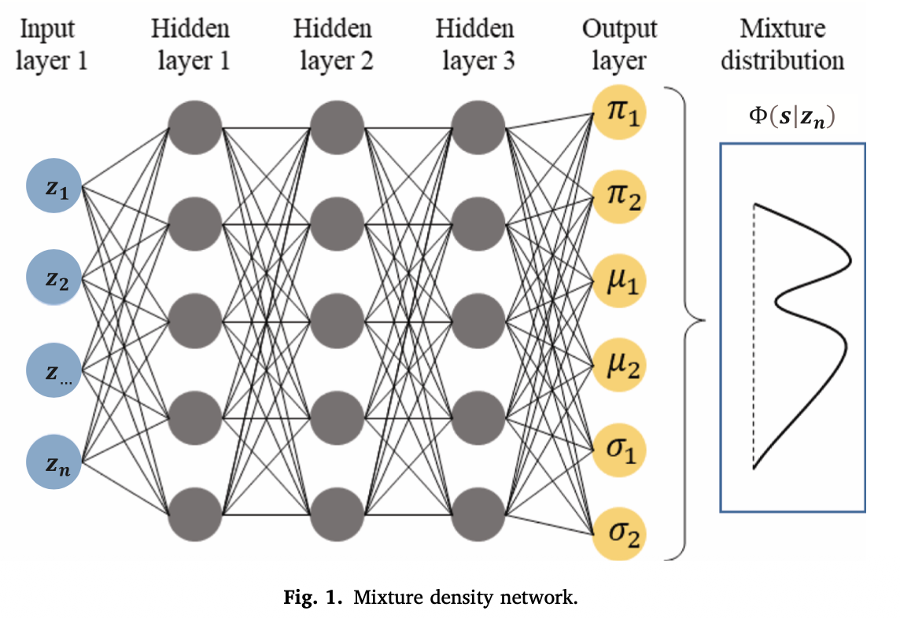
The output vector of the last hidden layer, \(t^{(L)}\), is partitioned into three sub-vectors \(t^{\pi}, t^{\mu}, t^{\sigma}\). Because the mixture weights must sum to one, a softmax is applied; because standard deviations must be positive, an exponential transform is applied; the means are used without transformation.
A standard MDN maximises the likelihood that the observed target \(s_n\) arises from the mixture, in NLL form[9].
In a choice setting, however, the individual preference coefficient \(\beta_{nj}\) is never observed, so equation (13) cannot be minimised. This is why the authors embed the MDN-predicted mixture directly inside the choice model and estimate the distributional parameters from choice outcomes — the MDN-Logit model[1].
2.4 The MDN-Logit model
Standard MXL reflects random heterogeneity by assuming that coefficients are drawn from a single pre-specified distribution[4]. TasteNet captures systematic heterogeneity flexibly but terminates in a point estimate[10]. MDN-Logit overcomes both limitations by setting the network's output layer to the full parameters of a mixture distribution over preference coefficients rather than to a single coefficient.
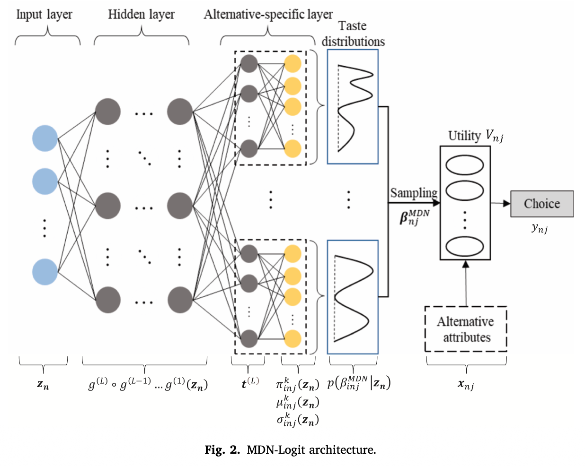
Separating heterogeneous from homogeneous attributes. To balance flexibility against parsimony, explanatory variables are divided into those with substantial heterogeneity (\(x^{MDN}_{nj}\)) and those that are relatively stable (\(x^{MNL}_{nj}\)). Rather than making every coefficient random, the MDN is applied only where heterogeneity matters.
The conditional coefficient distribution. Setting the covariance matrix \(\Sigma_k\) to be diagonal for tractability, the elements of the coefficient vector are conditionally independent given \(z_n\), and the marginal distribution of the coefficient for alternative \(j\), attribute \(i\) and individual \(n\) is a weighted mixture of \(K\) normals.
A multi-task architecture. Shared hidden layers learn common latent features from individual characteristics and pass them to attribute- and alternative-specific task layers.
Raw outputs for the weight, mean and standard deviation are then produced for each alternative, attribute and component.
Transformations and the economic constraint. Softmax is applied to the mixture weights and an exponential to the standard deviations.
To mitigate the black-box problem of DNNs and obtain economically sensible coefficients, a sign constraint is imposed on the mean — reflecting, for instance, the theoretical requirement that the marginal utilities of cost and travel time be negative. The constraint is differentiable and so does not obstruct backpropagation.
2.5 Estimation: simulated choice probabilities and joint estimation
Random preference coefficients are drawn \(R\) times from the mixture produced by the MDN; a logit choice probability is computed for each draw and the results are averaged — the simulated choice probability[5].
The utility at draw \(r\) is \(\widehat{V}_{r,nj} = \widehat{\boldsymbol{\beta}}^{MDN}_{r,nj}\boldsymbol{x}^{MDN}_{nj} + \boldsymbol{\beta}^{MNL}_{j}\boldsymbol{x}^{MNL}_{nj} + \varepsilon_{nj}\), where \(\widehat{\boldsymbol{\beta}}^{MDN}_{r,nj}\) is the vector of coefficients drawn once from each mixture. The model minimises the NLL built from the simulated choice probabilities plus a regularisation term (\(L_1\) or \(L_2\) norm), with \(\lambda\) the regularisation strength.
Random sampling and the backpropagation problem. Minimising equation (24) requires gradients with respect to the network weights \(w\) and biases \(b\), but stochastic sampling from a mixture introduces a discontinuity that obstructs ordinary backpropagation. The authors resolve this with the reparameterisation trick[12] and Gumbel-Softmax[11].
(i) Sampling within a normal component — reparameterisation. The coefficient drawn from component \(k\) is written using a standard normal variate \(\xi^{k}_{r,inj}\sim N(0,1)\). Randomness resides only in \(\xi\), so gradients with respect to \(\mu\) and \(\sigma\) can be backpropagated[12].
(ii) Selecting a component — Gumbel-Softmax. Standard sampling from a normal mixture has two steps: draw a candidate from each of the \(K\) components, then select one component discretely according to the weights \(\pi\). The second step is not differentiable. Gumbel-Softmax provides a continuous approximation[11].
Here \(G^{k}_{r} = -\log(-\log(u_k)),\; u_k\sim U(0,1)\) are independent Gumbel variates and \(\tau\) is a temperature hyperparameter. As \(\tau\to 0\) the approximation approaches genuine discrete selection; during training the continuous form permits gradients with respect to the mixture weights.
(iii) The final preference coefficient. Combining the reparameterised candidates with the Gumbel-Softmax weights yields a fully differentiable draw.
(iv) Gradients with respect to the mixture parameters. The gradients of the simulated log-likelihood (SLL) with respect to the weights, means and standard deviations are as follows.
Since \(\pi^{k}_{inj}, \mu^{k}_{inj}, \sigma^{k}_{inj}\) are all functions of the network weights \(w\) and biases \(b\), the final gradients aggregate the contributions along all three parameter paths.
The entire path — from choice outcome to choice probability, to sampled coefficient, to mixture parameters, to network parameters — is thus differentiable, and the conditional distribution of preference coefficients can be estimated jointly from choice data alone[1].
3. Synthetic data experiment
3.1 Data generating process
Binary choice data are generated with both socio-demographic characteristics and a random preference distribution. Individual characteristics comprise three categorical variables — age, income and gender. The alternatives are public transport (PT) and car (CAR), each with travel cost (TC), travel time (TT) and waiting time (WT). The PT constant is set to 0 and the CAR constant to −0.1, and the true cost coefficient is fixed at −1 so that the time and waiting-time coefficients can be read directly as the value of time (VOT) and the value of waiting time (VOWT)[1].
The coefficients on travel time and waiting time are each generated from a mixture of three normal components, with the weights \(\pi\), means \(\mu\) and standard deviations \(\sigma\) designed to vary with individual characteristics and an age × income interaction. For the travel-time coefficient \(\beta_{TT}\):
The waiting-time coefficient \(\beta_{WT}\) is generated with the same structure.
The time and waiting-time coefficients of individual \(n\) are drawn independently from \(\sum_{k=1}^{K}\pi^{k}_{TTn}\mathcal{N}(\mu^{k}_{TTn}, \sigma^{k\,2}_{TTn})\) and \(\sum_{k=1}^{K}\pi^{k}_{WTn}\mathcal{N}(\mu^{k}_{WTn}, \sigma^{k\,2}_{WTn})\). The point of the design is not merely to create groups with different means, but deliberately to create multimodal preference distributions whose weight, location and spread all shift with individual characteristics. Utilities are generated from the drawn coefficients, the error term is assumed extreme value, and 12,000 observations are split into 8,400 training (70%), 1,800 validation (15%) and 1,800 test (15%).
3.2 Benchmark models
- MNL: baseline reflecting only systematic heterogeneity through socio-demographic characteristics
- MXL[4]: adds normally distributed random heterogeneity
- LML[7]: a more flexible parametric mixing distribution
- TasteNet[10]: non-linear point estimation of coefficients from individual characteristics
- MDN-Logit[1]: the proposed model, estimating the full conditional coefficient distribution
Taking a particular public-transport attribute coefficient as an example, the MNL specification is equation (41); MXL adds an individual normal error (equation 42). MNL therefore shifts only the mean of the coefficient with individual characteristics, while MXL adds normal variation around it.
For MDN-Logit and TasteNet, a single hidden layer was judged sufficient on synthetic data. The number of hidden nodes was searched over {10, 20, 40, 60, 80, 100} and the number of mixture components over {1, 3, 5}. The \(L_1\) and \(L_2\) regularisation strengths were searched jointly, and the rectified linear unit (ReLU) was used as the activation. Because the time and waiting-time coefficients must be negative on theoretical grounds, a negative constraint of the form \(-\exp(\mu)\) was imposed on the distributional means.
3.3 Predictive performance
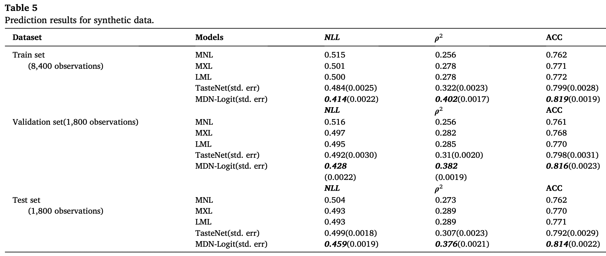
Both neural models (TasteNet, MDN-Logit) outperform MNL, MXL and LML, and on the validation set MDN-Logit exceeds TasteNet in accuracy by 1.8 percentage points. Estimating the within-group preference distribution therefore explains choice behaviour better than flexibly predicting a group-specific mean coefficient.
3.4 Recovery of the distributional parameters
The three socio-demographic variables yield sixteen combinations in total, and each combination has its own mixture distribution for \(\beta_{TT}\) and \(\beta_{WT}\). MDN-Logit therefore estimates sixteen conditional mixtures for each of the time and waiting-time coefficients. Because the true values are known, the estimated \(\pi, \mu, \sigma\) can be compared directly with the true parameters.
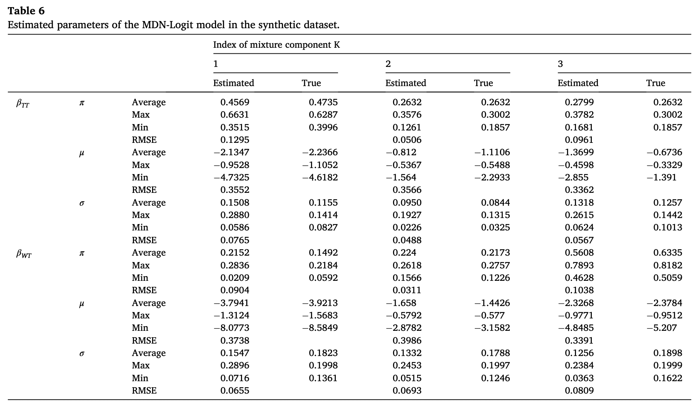
- The root mean square error (RMSE) of the mixture weights \(\pi\) and standard deviations \(\sigma\) is relatively low, roughly 0.0311–0.1295.
- The RMSE of the means \(\mu\) is somewhat larger, roughly 0.3–0.4. For the second mixture component of the time coefficient, for example, the mean of \(\pi\) is 0.2632 for both estimate and truth, whereas for the third component the minimum of \(\mu\) is −2.855 against a true value of −1.391.
- The authors attribute the deviation in some parameters — particularly component means — to the learning bias of neural hybrid models, while judging that the model recovers and distinguishes the preference distributions of different groups overall.
3.5 Recovery and interpretation of the preference distribution
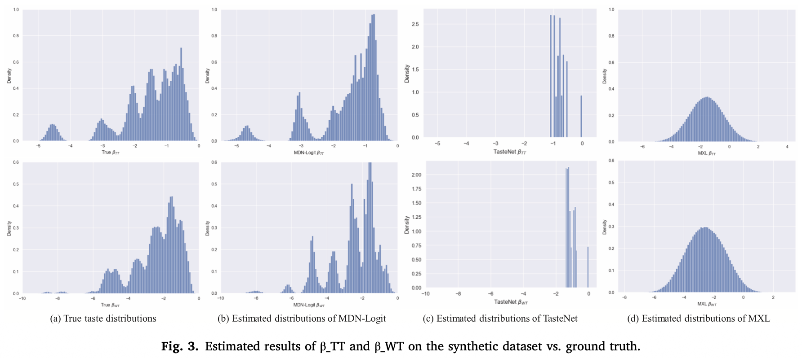
- The true \(\beta_{TT}\) is a complex multimodal distribution with peaks near −4.5, −3, −2, −1.5 and −0.5.
- MXL, premised on a single normal, flattens this structure into one broad bell curve.
- TasteNet, producing a single point per group, shows only very narrow spikes.
- MDN-Logit recovers much of the multi-peaked structure and range of the true distribution, including an extreme coefficient near −8 in \(\beta_{WT}\).
The advantage of MDN-Logit therefore lies not only in predictive accuracy but in recovering the shape of the true, complex preference distribution. This is consistent with empirical reports that WTP distributions in stated-preference data are frequently multimodal[25] and with the recent methodological turn toward non-normal and skewed distributions[20][21].
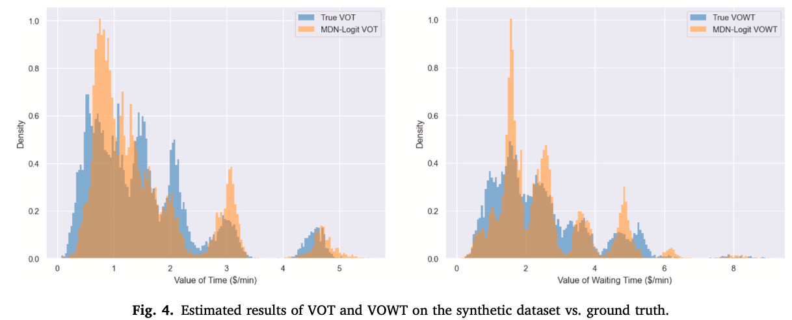
Because the cost coefficient is fixed at −1 in the synthetic data, the negatives of the time and waiting-time coefficients correspond to VOT and VOWT. For VOWT, MDN-Logit reproduces the multimodal structure of the true distribution fairly accurately. For VOT, however, the true distribution has five peaks while MDN-Logit captures only three distinct ones: the overall range and principal structure are recovered, but some bias remains in the number and location of the finer peaks.
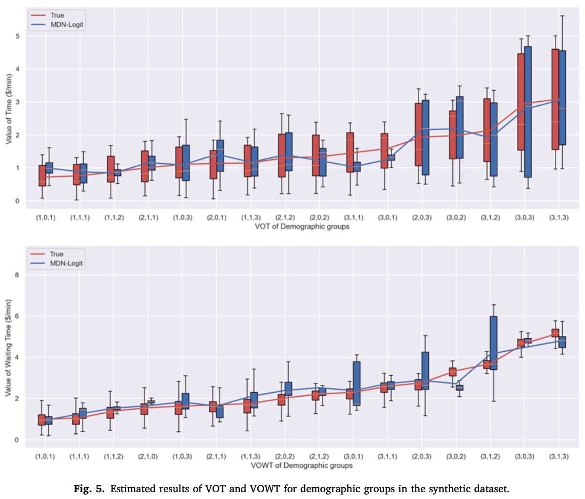
To assess whether MDN-Logit recovers not only between-group mean differences but also within-group random heterogeneity, the authors present box plots by group. MDN-Logit reproduces the ordering and overall trend of group-level VOT and VOWT in line with the truth — evidence that it captures systematic heterogeneity — and because a box has width even within a single group, it represents within-group random heterogeneity, unlike TasteNet's group-level point estimates. The within-group range is nevertheless distorted in places, so the distribution of any individual group should not be interpreted too precisely.
4. Application to real data: Swissmetro
The empirical application uses the Swissmetro (SM) stated preference (SP) dataset[13]. The utility functions for the three modes — train (TRAIN), Swissmetro (SM) and car (CAR) — are specified as follows. MDN-Logit learns mixture distributions for the cost and time coefficients, while the relatively stable coefficients on headway (HE) and seat configuration (SEATS) are treated as fixed MNL coefficients.
Choice probabilities incorporate alternative availability, where \(av_j\) equals 1 if alternative \(j\) is available and 0 otherwise.
Among the benchmarks, MNL reflects only systematic heterogeneity through first-order interactions with individual characteristics (equation 47), and MXL adds a normal random term (equation 48). TasteNet uses the same utility structure as equations (43)–(45).
MDN-Logit performs a random search over a high-dimensional hyperparameter space. For the \(q\)-th combination \(h^q\) the loss is minimised (equation 49), and the combination with the smallest validation error is selected (equation 50).
4.1 Predictive results
The combinations of socio-demographic characteristics identify 529 groups in total, meaning that a distinct conditional preference mixture is produced for each. Kullback-Leibler divergence (KL divergence) confirms significant differences between the group-level distributions. The five largest groups contain 450, 252, 180, 180 and 126 respondents, together about 11.1% of the sample.
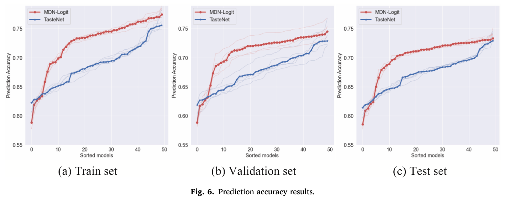
Goodness of fit is assessed with McFadden's pseudo \(\rho^2\)[3], the F1 score (the harmonic mean of precision and recall), the Akaike information criterion (AIC) and the Bayesian information criterion (BIC). \(LL(\widehat{\beta})\) is the log-likelihood of the estimated model, \(LL(0)\) that of the null model, \(M\) the number of estimated parameters and \(N\) the number of observations.
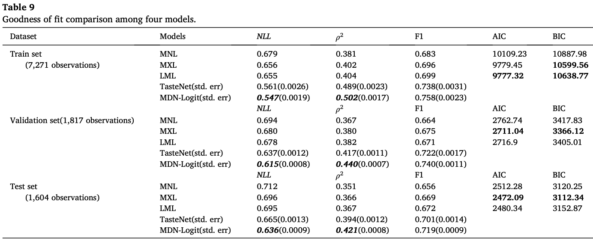
On real data too, a conditional mixture distribution reflects between- and within-group heterogeneity better than a single point estimate.
4.2 Estimated preference distributions
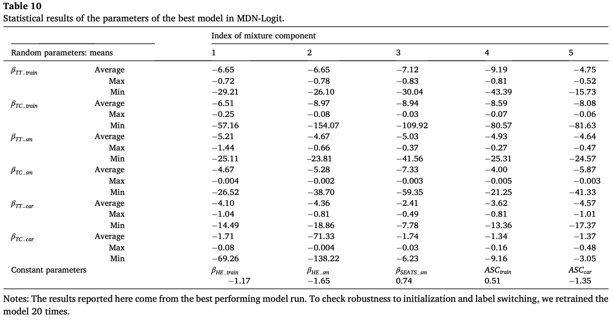
The ranges of the cost and time coefficients differ markedly across alternatives, indicating that preference heterogeneity itself may be alternative-specific. That MDN-Logit captures wider heterogeneity than MXL is visible in comparison with the MNL and MXL estimates in Tables 11 and 12.
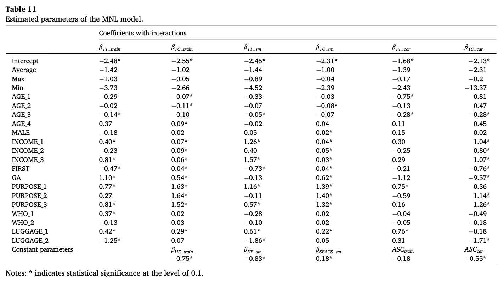
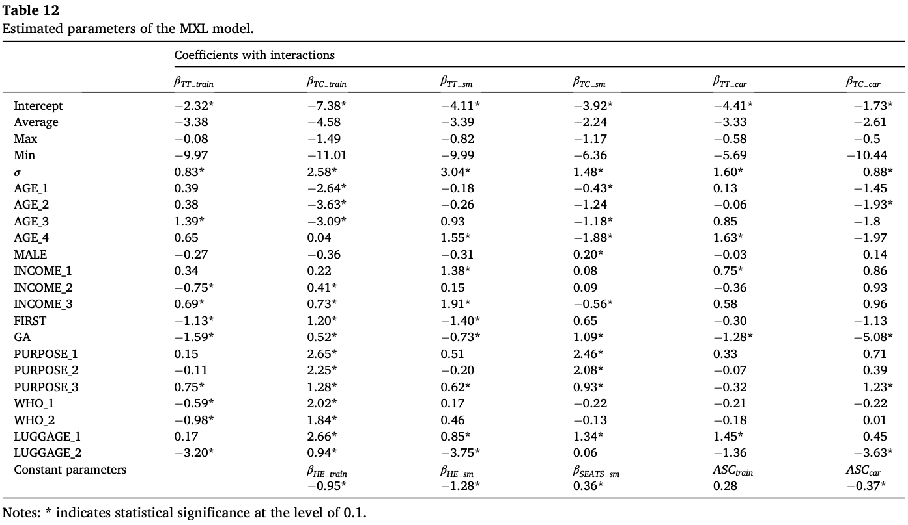
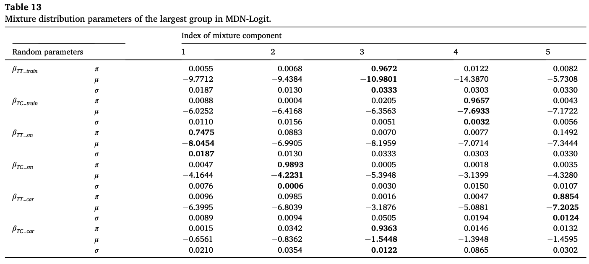
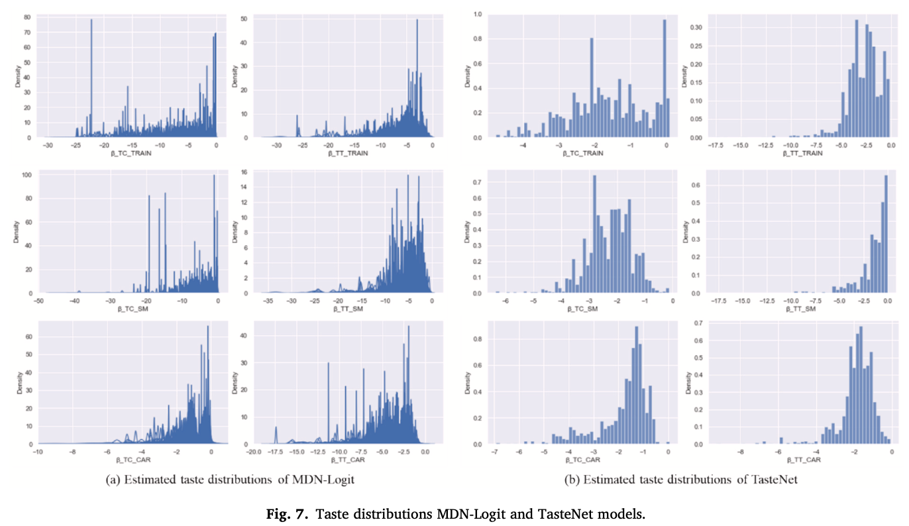
The MDN-Logit distributions are wider and more complex than TasteNet's, because MDN-Logit additionally captures stochastic heterogeneity that individual characteristics do not explain. Some extreme values do occur — such as the peak near −22.5 in the train cost coefficient — so the tails require cautious interpretation.
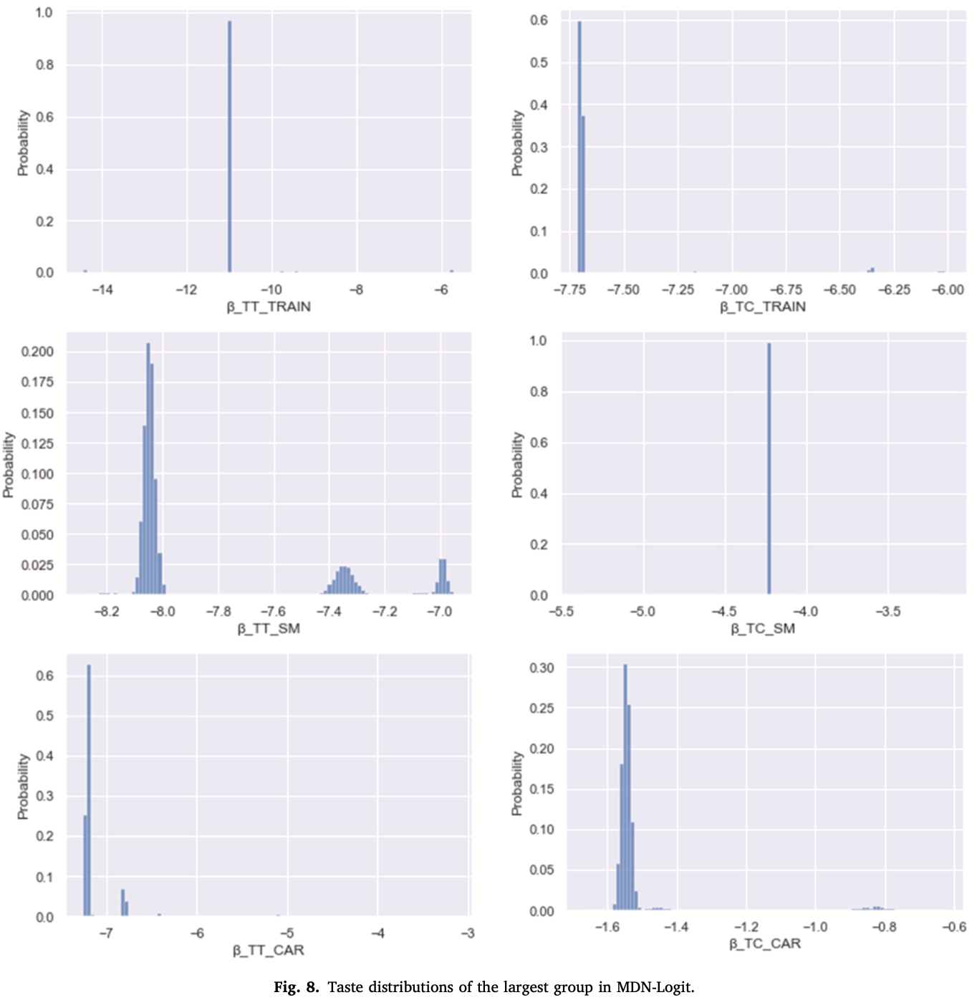
The cost coefficients of all three alternatives concentrate on nearly a single value within the group, whereas the time coefficients for SM and CAR show comparatively wide distributions — evidence of residual differences in time sensitivity even within identical socio-demographic characteristics.
4.3 Value of time and elasticities
For the five largest groups (450, 252, 180, 180 and 126 respondents), VOT was drawn 10,000 times from each group's distribution to construct the VOT distribution.
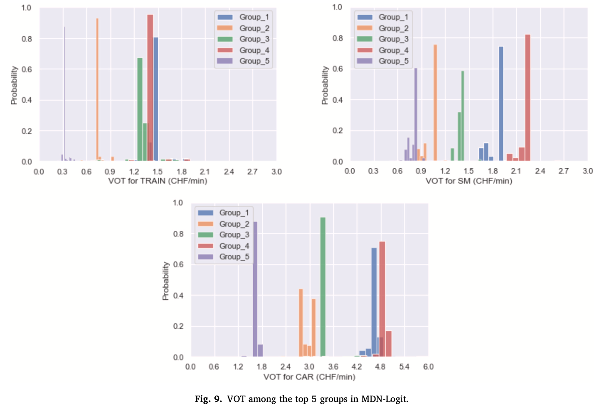
- Within-group VOT for TRAIN concentrates largely on specific values, although Group 3 spans roughly 1.3–1.4 Swiss francs (CHF) per minute.
- SM and CAR show greater within-group heterogeneity: Group 4's SM VOT spans roughly 2.1–2.3 CHF/min and its CAR VOT roughly 4.8–5.0 CHF/min.
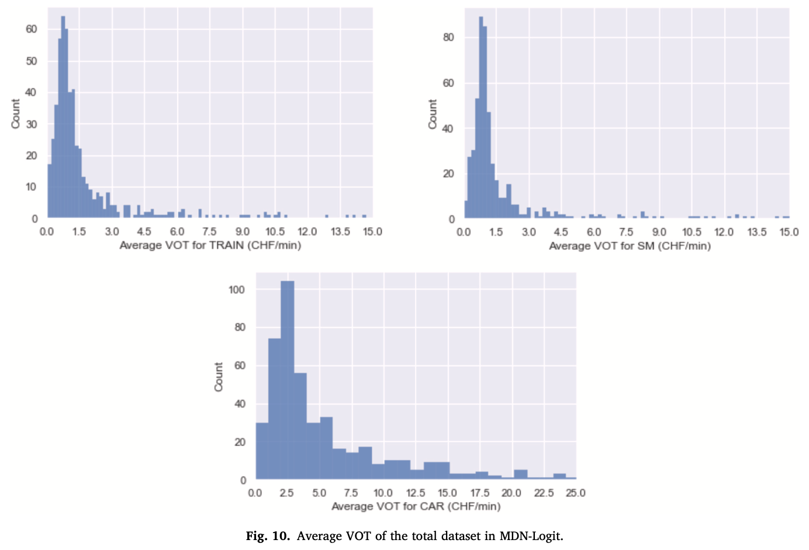
Drawing VOT 10,000 times for every group and plotting the distribution of group means, the average VOT for TRAIN and SM lies mainly between 0.1 and 1.5 CHF/min, while CAR lies mainly between 1.2 and 5 CHF/min with a wider and longer right tail. Long tails may reflect estimation bias in extreme demographic groups, so over-interpretation should be avoided in policy analysis. Simply truncating the tail is not the answer either: given recent evidence that the shape of the tail materially affects the valuation of travel-time reliability[26], tails are better treated as objects of separate reporting than as material for deletion. Moreover, because the moments of a ratio-based WTP may not exist under some distributions, any reported mean VOT should be accompanied by an explicit statement of how it was computed and of its uncertainty measure[22].
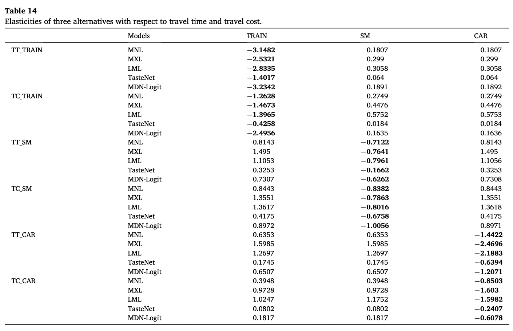
Across all models own-elasticities are negative and cross-elasticities positive, consistent with the intuition that increases in time or cost reduce the choice probability of that mode and raise that of the others.
Part II MAPL: Direct Estimation of Aggregate Preference Distributions
0. Core assumptions and idea
- For each alternative there exists a continuously distributed latent preference. Its value differs across people, and that difference generates the heterogeneity of choice.
- What that latent quantity is is left open. It may be interpreted as utility or as regret. For this reason the authors use the broader term "preference" rather than "utility".
- Utility is not assumed to be a linear combination of attribute coefficients. A neural network learns the whole mapping from observed inputs to the parameters of the preference distribution, so interactions and non-linearities need not be specified in advance.
- The shape of the aggregate preference distribution must instead be assumed. One chooses among normal, normal mixture, or semi-parametric families. That is, the assumption has not disappeared; it has moved from the attribute level to the alternative level.
- The link function mapping preference to choice probability — logit, for instance — is specified by the analyst. This part is not determined automatically.
- In the baseline specification the aggregate preference for each alternative is univariate. Correlation across alternatives is not addressed in the base model.
- The mixed logit account — "This person's price sensitivity is −0.8 and their waiting-time sensitivity is −0.3. Each sensitivity is normally distributed in the population. Multiply price and time by these sensitivities and add to obtain the appeal of A." Distributions are assumed component by component and then assembled.
- The MAPL account — "Given a price of 4,500 won and a two-minute wait, the appeal of option A itself is distributed in the population with mean 1.2 and spread 0.6." No decomposition into components; the distribution of the finished product is predicted directly.
What is gained and what is lost. What is gained is robustness. Whether price and time act multiplicatively (interaction) or price enters quadratically (non-linearity), MAPL can match the resulting distribution without knowing the form. What is lost is interpretation. One cannot say "this person chose B because they are sensitive to price", and consequently the value of time or willingness to pay cannot be extracted directly at the coefficient level.
1. Problem statement: the gap between theoretical flexibility and practical constraint
Mixed logit (MXL) — also called random-parameters or random-coefficients logit — is theoretically powerful in that it can approximate almost any discrete choice probability derived from random utility maximisation (RUM)[4]. In application, however, it offers no criterion for choosing the mixing distribution, so the analyst must supply assumptions of the following kind.
- The heterogeneity distributions of different attributes are mutually independent.
- The coefficient distribution is normal or lognormal.
- Some attributes carry the same coefficient for everyone.
- Utility is a linear combination of attribute coefficients.
Furthermore, the distributional forms supported by available estimation software are limited, so the analyst's choice can be driven by software constraints rather than by theory or data. The result is that MXL, flexible in principle, is in practice often used while carrying a risk of misspecification in both the utility function and the heterogeneity distribution[2].
2. The shift of perspective in MAPL
Rather than assuming distributions for individual attribute coefficients, MAPL predicts directly, from the model's inputs, the distributional parameters of the aggregate preference for each alternative. Here aggregate preference is not the population's average preference but the latent preference a single individual forms from the observable elements of a particular alternative.
- Conventional MXL: attribute variables → attribute-specific coefficient distributions → linear utility → choice probability
- MAPL: model inputs → parameters of the alternative-specific aggregate preference distribution → simulation of preference values → choice probability
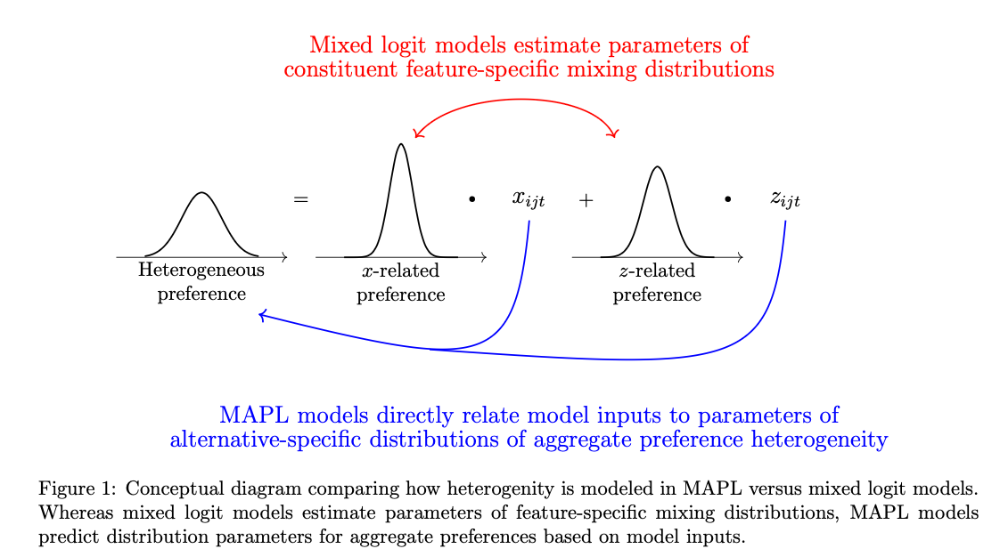
The assumptions MAPL relaxes. First, MXL must specify what distribution the random coefficient of each attribute — cost, time — follows, whereas MAPL models the distribution of aggregate preference per alternative and so has less need to assume normality, independence or homogeneity for any particular coefficient. Second, MXL typically presumes a linear-in-parameters utility function, whereas MAPL is designed to accommodate decision paradigms other than utility maximisation, such as regret minimisation — which is why the authors prefer "preference" to "utility". Which notion of preference and which link function to use nevertheless remains a choice the analyst must make on the basis of domain knowledge and evidence[2].
3. Model structure
Specifying a MAPL model requires three decisions: (i) the choice preference framework, (ii) the aggregate preference distribution specification, and (iii) the preference distribution parameter estimator.
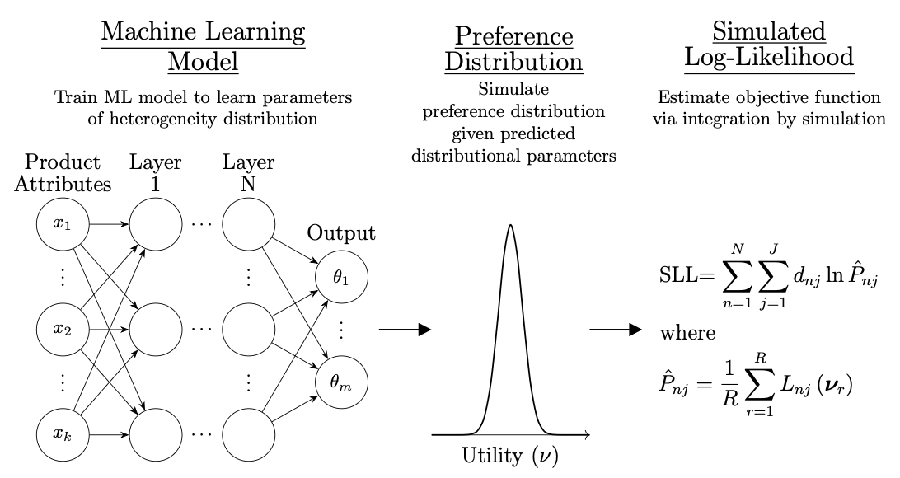
Assuming the aggregate preference distribution. MAPL still requires an assumption about the heterogeneity distribution — but about the aggregate preference of each alternative, \(v_{ijt}\sim\Psi(\theta_{ijt})\), rather than about attribute coefficients. Here \(\Psi\) is the distributional family and \(\theta_{ijt}\) its parameters. Assuming normality means viewing aggregate preference as unimodal and symmetric in the population; using a normal mixture means positing a finite number of subpopulations with distinct preferences. Lognormal, triangular, and non- or semi-parametric families are equally admissible provided the integral is finitely defined and the family is parameterisable; the paper's simulations use the semi-parametric distribution of Fosgerau and Mabit[8]. Attempts to loosen distributional rigidity are of course not confined to MAPL: transformation-based non-normal random-coefficient probit models[20] and transformation-based flexible error structures[21] represent the parametric route, while distribution-free estimation of individual-parameter logit[23] and nonparametric mixed logit from market-share data[19] represent the route that removes the assumption. The flexibility of MAPL therefore consists less in eliminating the heterogeneity assumption than in moving it from the attribute unit to the alternative-level aggregate preference unit.
The parameter estimator. The estimator links observed inputs to the parameters of the aggregate preference distribution, \(X\to\theta(X)\). If the relation is simple a linear regression will serve; if it is complex or non-linear a neural network can be used, as in this paper. Any estimator capable of predicting a scalar can in principle be employed.
Mathematical representation
Let \(y_{ijt}\in[0,1]\) denote the outcome of individual \(i\) choosing alternative \(j\) in choice task \(t\); \(x_{ijt}\in\mathbb{R}^k\) is the input vector of \(k\) explanatory variables — alternative attributes, individual characteristics — and \(\beta\in\mathbb{R}^m\) the parameter vector to be estimated. The function \(G\) generates the distributional parameters for each observation from inputs \(X\) and parameters \(\beta\), namely \(G(\beta,X)\), and these define the distribution of alternative-specific aggregate preference, \(v\sim\Psi(G(\beta,X))\). The link function \(h(v)\) converts a preference value into a conditional choice probability; with a logit link, a logit choice probability is computed for each simulated preference value. The final choice probability, reflecting heterogeneity, is the average over the whole preference distribution.
where \(f(\nu,\beta,X)\) is the density corresponding to \(\Psi(G(\beta,X))\). Equation (M1) resembles the integration over random coefficients in MXL[4], with the difference that MAPL integrates over the alternative-level aggregate preference \(\nu\) rather than over a vector of attribute coefficients. Estimation minimises the discrepancy between observed choices \(y\) and predicted choice probabilities, where the goodness-of-fit function \(d(\cdot)\) may be the NLL or the KL divergence.
In summary, MAPL consists of three layers, \(X \to G(\beta,X) \to \Psi(G(\beta,X)) \to h(v) \to \bar{p}\), and its distinguishing feature is not that it "adds more heterogeneity" but that it changes the unit at which heterogeneity is modelled from attribute coefficients to alternative-level aggregate preference.
4. Simulation experiment
MXL performs well when the utility function and the heterogeneity distribution are assumed correctly, but in practice one cannot know in advance whether utility is linear, whether attributes interact, whether non-linearities are present, or whether random coefficients are independent or correlated. The authors therefore construct four distinct data generating processes (DGPs) and compare how well various models recover the true log-likelihood. All DGPs follow a random utility model \(u_{ijt} = v_{ijt} + \varepsilon_{ijt}\), with \(\varepsilon_{ijt}\) a Gumbel error, one fixed coefficient \(\beta_0\) and two random coefficients \(\beta_1, \beta_2\).
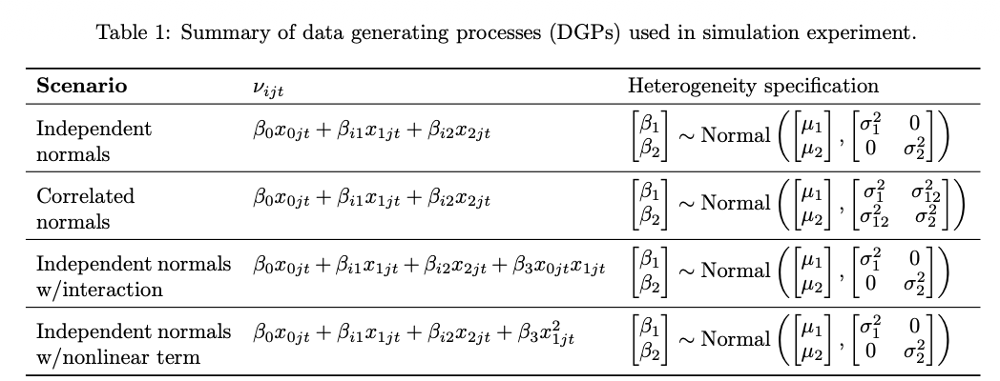
Setup. All alternative attributes \(x\) are drawn from a uniform distribution on \([-1,1]\); 10,000 individuals each choose once among three alternatives on ten occasions; each choice probability is generated by averaging 1,000 simulated logit probabilities. The comparison models are MNL, MXL with independent normals, a simple neural network (Simple NN), a deep neural network (Deep NN), MAPL with a normal distribution, and MAPL with the Fosgerau-Mabit semi-parametric distribution[8]. The MAPL network has two hidden layers of 64 nodes each, with a normalisation layer and a dropout layer after each; inputs are transformed independently by alternative but the same network weights apply to all alternatives. Each DGP-model combination is repeated 20 times, the data are split 80/20 into training and test sets, the training loss is the NLL, and each run lasts 2,000 epochs.
Performance measure. The percentage difference between each model's estimated log-likelihood and the true log-likelihood, the latter being the log-likelihood of an MXL estimated with exact knowledge of the DGP's utility structure and heterogeneity distribution. An error closer to 0% means better recovery of the true DGP.
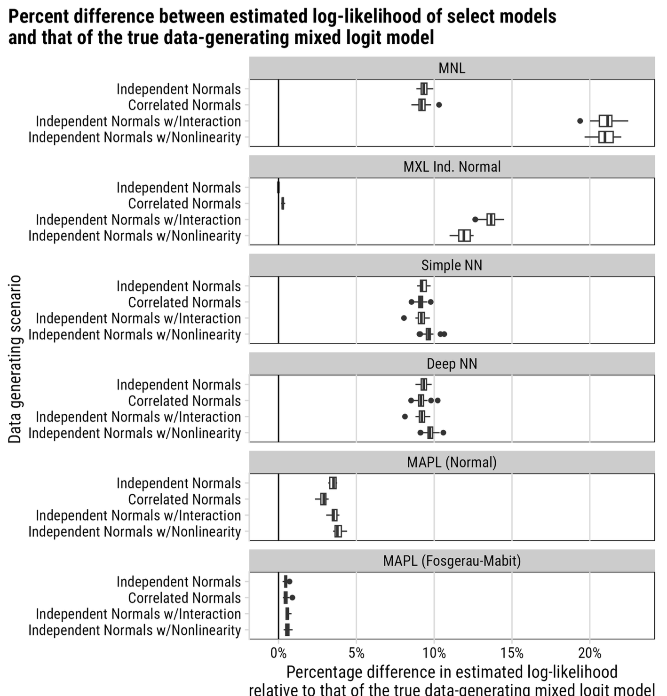
Principal findings.
- The limits of MNL and generic neural networks. Because MNL cannot reflect unobserved heterogeneity, it shows an error of about 9% even when the utility function is correctly specified, and the error exceeds 20% once interactions or non-linearities are omitted. Simple NN and Deep NN are comparatively robust to interactions and non-linearities in utility, but because they do not model unobserved heterogeneity explicitly, misspecification of heterogeneity is effectively unavoidable.
- The performance of correctly specified MXL. Independent-normal MXL shows 0% error when the true DGP is independent normal — if the true model is known exactly, MXL performs best. Interestingly, independent-normal MXL still performs reasonably well when the true coefficients are correlated. Once interaction or non-linear terms are omitted from the utility function, however, the error rises sharply. In this experiment, in other words, MXL's greater vulnerability is misspecification of the utility function rather than neglected correlation between coefficients.
- The performance of MAPL. Normal MAPL keeps the error below 4% across all four DGPs, and Fosgerau-Mabit semi-parametric MAPL stays under 1% in every replication. MAPL applies stably to all four DGPs without specifying attribute-level coefficient distributions or the interactions and non-linearities of the utility function in advance. Being a neural model, however, it is sensitive to sample size, and performance and stability may deteriorate in small samples.
5. Conclusions and limitations
Practical implication. Comparing MAPL with conventional MXL can serve to diagnose whether the utility function or heterogeneity assumptions of an existing model are wrong.
Limitations. (i) As a neural model it requires an adequate sample. (ii) The current model focuses on alternative-specific preference distributions and so may not capture forms of heterogeneity that manifest as correlation across alternatives. (iii) Predictive power is high, but methods for interpreting the estimated distributions economically and behaviourally are not yet established.
Future work. The authors propose developing methods to recover economic quantities of interest such as WTP, elasticities and marginal effects from MAPL; establishing theoretically the conditions under which MAPL exactly recovers conventional choice models; improving computational efficiency; and extending to more complex behavioural phenomena such as dynamic choice and reference dependence[2].
Part III Synthesis and Research Proposal
1. Comparing the two papers
Both papers use neural networks to estimate unobserved preference heterogeneity in discrete choice models flexibly, but they differ in problem framing and in the unit at which heterogeneity is modelled.
- MDN-Logit[1] asks: why do people with identical socio-demographic characteristics differ in their sensitivity to time and cost? It estimates attribute-specific coefficient distributions conditional on individual characteristics, decomposing observable heterogeneity from residual random heterogeneity.
- MAPL[2] asks: what happens when the conventional assumptions — that the time coefficient is normal and that utility is linear — are wrong? It estimates alternative-level aggregate preference distributions instead of attribute coefficients, reducing dependence on the specification of coefficient distributions and functional form.
| MDN-Logit [1] | MAPL [2] | |
|---|---|---|
| Unit of heterogeneity | Conditional mixture distribution over attribute coefficients | Distribution of aggregate preference per alternative |
| Methodological character | Estimates the time and cost coefficients themselves, so it can be said which group is sensitive to time or to cost. Utility nevertheless retains a linear, additive structure of coefficients and attributes. | Does not estimate coefficients separately; models the distribution of the latent preference \(v_j\) that observed variables generate for each alternative. The risk of misspecifying coefficient distributions and functional form falls, but coefficients, VOT and WTP are hard to interpret directly. |
| Evidence provided | Recovers multimodal preference distributions on synthetic data, Swissmetro and freight choice data, with higher predictive performance than MNL, MXL and TasteNet. Derives VOT and elasticities, connecting to policy analysis. | Validated on four synthetic DGPs. When the true utility function is known exactly, MXL is best; once interactions or non-linearities are omitted, MXL degrades sharply. MAPL remains comparatively stable under such misspecification. |
| Weakness | Coefficients are interpretable, but the model is vulnerable to misspecification of the utility structure. | Robust to misspecification of the utility function, but weak in recovering policy indicators at the coefficient level. |
The research gap. Follow-up work can therefore be framed around a single question: how can the functional-form flexibility of MAPL be combined with the coefficient- and VOT-level interpretability of MDN-Logit?
2. Position within the recent research landscape
Studies since 2023 occupy different positions along the axis of "where the assumption is placed". Locating the two seminar papers within that landscape makes the gap sharper.
| What is relaxed | Representative work | What remains assumed |
|---|---|---|
| Error distribution | RUM-consistent neural estimator (RUM-NN)[17] | Functional form of utility; structure of coefficient heterogeneity |
| Functional form of utility | Lattice-network partially monotonic models[15], embedding-based models[14], residual-network family[16][18] | Random heterogeneity absorbed into residuals or point estimates |
| Shape of the coefficient distribution | Transformation-based non-normal random coefficients[20][21], distribution-free and nonparametric estimation[19][23] | Linear, additive utility structure |
| Coefficient distribution + conditioning on the individual | MDN-Logit[1] | Linear additive utility, number of components \(K\), conditional independence across coefficients, sign constraints |
| The unit of heterogeneity itself | MAPL[2] | Shape of the alternative-level preference distribution, link function, independence across alternatives |
| The reference point | Reference-dependent neural choice model[24] | Functional form of reference-dependent utility |
As the table shows, the body of work that flexibilises the functional form of utility and the body that flexibilises the coefficient distribution barely meet. MDN-Logit raises the latter to a conditional mixture distribution but retains linear additive utility; lattice and residual networks solve the former but do not expose heterogeneity as a distribution. MAPL relaxes both assumptions at once, at the price of abandoning coefficient-level interpretation. No model yet satisfies all three requirements simultaneously: flexibility of functional form, flexibility of distribution, and interpretability of coefficients. That is the target of the present proposal.
3. Research proposal
The proposed architecture has an MDN estimate attribute-specific coefficient distributions conditional on individual characteristics, while a residual network captures non-linearity and interactions.
Both \(\beta_{nj}\) and \(r_{\theta}(\cdot)\) are estimated from data without sign constraints. Positive coefficients on time or cost are not removed as automatically irrational; they are read as diagnostic information indicating the genuine preference of a particular group, an interaction between attributes, an omitted variable, or model misspecification. This follows the empirical recommendation that sign constraints should not be imposed mechanically because positive WTP can be observed even for undesirable attributes[25], and continues the logic of partially monotonic approaches that impose monotonicity structurally only on selected attributes[15].
Interpreting policy indicators. The value of time is computed not as a simple ratio of coefficients but as the local marginal effect of the full utility function.
Observations whose marginal utility of cost is near zero or positive are not put through a mechanical VOT calculation but reported as a separate group. Rather than a single mean VOT, the following are reported together: the distribution of the marginal utilities of time and cost; the share of each coefficient sign; the proportion and distribution of the population for whom VOT is defined; and the characteristics of the group whose sign reverses. This responds directly to the requirement that the computation and uncertainty measure of WTP indicators be stated explicitly[22] and to the policy significance of distributional tails[26].
Validation strategy. Comparing MDN-Logit with the proposed model decomposes whether performance gains arise from coefficient heterogeneity or from non-linear utility structure. MAPL, which imposes no strong assumptions on sign or functional form, serves as the comparison baseline against which the dependence of the structural model's conclusions on its assumptions can be assessed.
References
- Li, X., Feng, T., Rasouli, S., Jia, P., & Kuang, H. (2026). Decomposing random taste heterogeneity in discrete choice modeling: A mixture density network-embedded logit model. Transportation Research Part E: Logistics and Transportation Review, 212, 104940.
- Forsythe, C. R., Arteaga, C., & Helveston, J. P. (2024). The Mixed Aggregate Preference Logit Model: A Machine Learning Approach to Modeling Unobserved Heterogeneity in Discrete Choice Analysis. arXiv preprint arXiv:2402.00184. https://arxiv.org/abs/2402.00184
- McFadden, D. (1974). Conditional logit analysis of qualitative choice behavior. In P. Zarembka (Ed.), Frontiers in Econometrics (pp. 105–142). Academic Press.
- McFadden, D., & Train, K. (2000). Mixed MNL models for discrete response. Journal of Applied Econometrics, 15(5), 447–470.
- Train, K. E. (2009). Discrete Choice Methods with Simulation (2nd ed.). Cambridge University Press.
- Greene, W. H., & Hensher, D. A. (2003). A latent class model for discrete choice analysis: contrasts with mixed logit. Transportation Research Part B: Methodological, 37(8), 681–698.
- Train, K. (2016). Mixed logit with a flexible mixing distribution. Journal of Choice Modelling, 19, 40–53.
- Fosgerau, M., & Mabit, S. L. (2013). Easy and flexible mixture distributions. Economics Letters, 120(2), 206–210.
- Bishop, C. M. (1994). Mixture density networks (Technical Report NCRG/94/004). Aston University. https://research.aston.ac.uk/en/publications/mixture-density-networks/
- Han, Y., Pereira, F. C., Ben-Akiva, M., & Zegras, C. (2022). A neural-embedded discrete choice model: Learning taste representation with strengthened interpretability. Transportation Research Part B: Methodological, 163, 166–186.
- Jang, E., Gu, S., & Poole, B. (2017). Categorical reparameterization with Gumbel-Softmax. International Conference on Learning Representations (ICLR). arXiv:1611.01144.
- Kingma, D. P., & Welling, M. (2014). Auto-encoding variational Bayes. International Conference on Learning Representations (ICLR). arXiv:1312.6114.
- Bierlaire, M., Axhausen, K., & Abay, G. (2001). The acceptance of modal innovation: The case of Swissmetro. In Proceedings of the 1st Swiss Transport Research Conference. Ascona, Switzerland.
Recent literature, 2023–2026
- Arkoudi, I., Krueger, R., Azevedo, C. L., & Pereira, F. C. (2023). Combining discrete choice models and neural networks through embeddings: Formulation, interpretability and performance. Transportation Research Part B: Methodological, 175, 102783. doi:10.1016/j.trb.2023.102783
- Kim, E.-J., & Bansal, P. (2024). A new flexible and partially monotonic discrete choice model. Transportation Research Part B: Methodological, 183, 102947. doi:10.1016/j.trb.2024.102947
- Kamal, K., & Farooq, B. (2024). Ordinal-ResLogit: Interpretable deep residual neural networks for ordered choices. Journal of Choice Modelling, 50, 100454. doi:10.1016/j.jocm.2023.100454
- Bagheri, N., Ghasri, M., & Barlow, M. (2025). A neural estimation framework for discrete choice models with arbitrary error distributions. Journal of Choice Modelling, 57, 100583. doi:10.1016/j.jocm.2025.100583
- Hasanzadeh, H., Wang, B., Rönnqvist, M., Badji, R., & Verma, A. (2025). Evolutionary optimization for neural network-based discrete choice modeling: Enhancing stability and efficiency. Transportation. doi:10.1007/s11116-025-10682-x
- Ren, X., Chow, J. Y. J., & Bansal, P. (2025). Nonparametric mixed logit model with market-level parameters estimated from market share data. Transportation Research Part B: Methodological, 196, 103220. doi:10.1016/j.trb.2025.103220
- Bhat, C. R., Mondal, A., & Pinjari, A. R. (2025). A flexible non-normal random coefficient multinomial probit model: Application to investigating commuter's mode choice behavior in a developing economy context. Transportation Research Part B: Methodological, 195, 103186. doi:10.1016/j.trb.2025.103186
- Bhat, C. R. (2024). Transformation-based flexible error structures for choice modeling. Journal of Choice Modelling, 53, 100522. doi:10.1016/j.jocm.2024.100522
- Daly, A., Hess, S., & Ortúzar, J. de D. (2023). Estimating willingness-to-pay from discrete choice models: Setting the record straight. Transportation Research Part A: Policy and Practice, 176, 103828. doi:10.1016/j.tra.2023.103828
- Swait, J. (2023). Distribution-free estimation of individual parameter logit (IPL) models using combined evolutionary and optimization algorithms. Journal of Choice Modelling, 47, 100396. doi:10.1016/j.jocm.2022.100396
- Kim, K., Kim, J., Park, S., Lee, J., & Kim, J. (2025). A machine learning technique embedded reference-dependent choice model for explanatory power improvement: Shifting of reference point as a key factor in vehicle purchase decision-making. Transportation Research Part B: Methodological, 191, 103130. doi:10.1016/j.trb.2024.103130
- Tabasi, M., Rose, J. M., Pellegrini, A., & Hossein Rashidi, T. (2024). An empirical investigation of the distribution of travellers' willingness-to-pay: A comparison between a parametric and nonparametric approach. Transport Policy, 146, 312–321. doi:10.1016/j.tranpol.2023.12.006
- Zang, Z., Batley, R., Xu, X., & Wang, D. Z. W. (2024). On the value of distribution tail in the valuation of travel time variability. Transportation Research Part E: Logistics and Transportation Review, 190, 103695. doi:10.1016/j.tre.2024.103695
- Alcorta, P., & Mariel, P. (2026). On the asymptotic variance of latent class logit models for discrete choice applications. Journal of Choice Modelling, 58, 100586. doi:10.1016/j.jocm.2025.100586
- Torres Lahoz, L., Pereira, F. C., Sfeir, G., Arkoudi, I., Monteiro, M. M., & Lima Azevedo, C. (2023). Attitudes and latent class choice models using machine learning. Journal of Choice Modelling, 49, 100452. doi:10.1016/j.jocm.2023.100452
This note reorganises a seminar presented on 19 August 2026 by Myongji Cho (Ph.D. candidate, Technology Management, Economics and Policy Program, Seoul National University). All figures and tables are reproduced from the original papers [1][2] as presented in the seminar material, with the source cited in each caption. Equation numbers follow those of the original papers; equations from the MAPL paper are labelled M1 and M2 to distinguish them.